AppTown tour
What AppTown looks like, page by page. The pictures are made from a small example team's AppTown each release; back to apptown.dev.
Home
Where every person starts. Each app here keeps a record of every change, who asked, what was checked and who approved it.
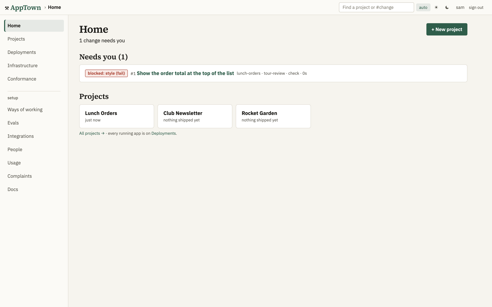
Projects
The team's apps, each with its way of working and what is running.
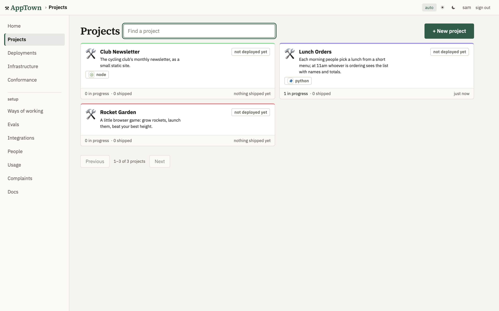
Start an app
Three steps: a name, a way of working (the team's habits for that kind of app, or describe the app and AppTown suggests one), and where the code lives.
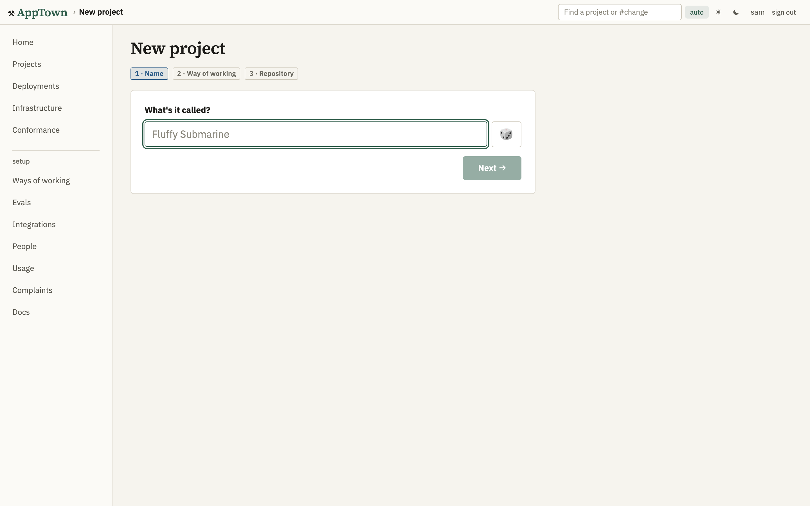
An app's page
What the app is, its open changes, and where it runs.
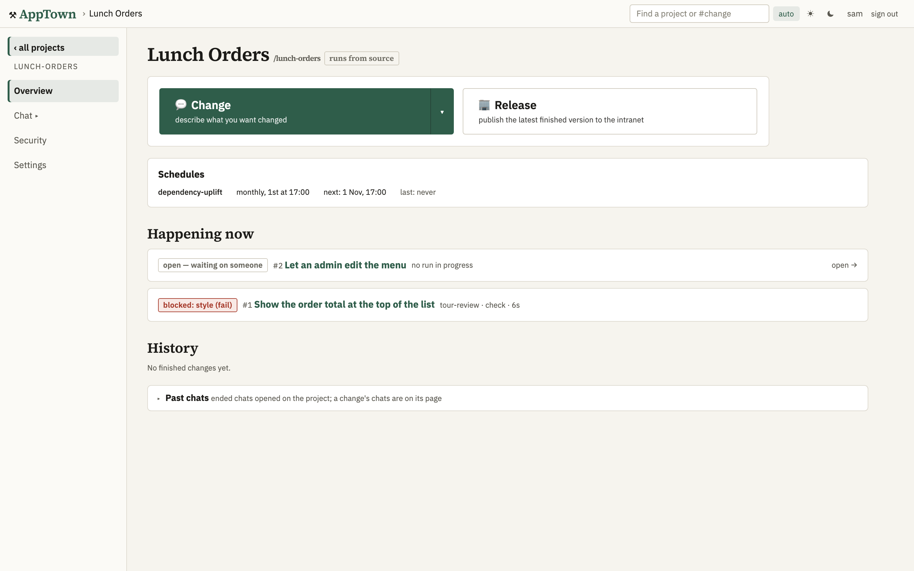
Chat with the helper
Say what you want changed. A coding agent works on its own copy of the app, runs the tests, and says when there is something to try.
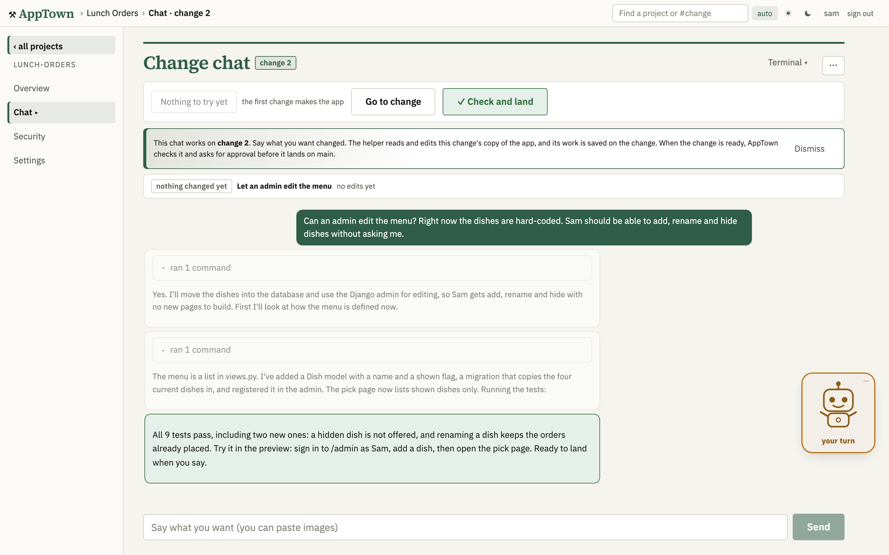
A change, checked
Every change runs the project's checks. Here the tests passed and the style check failed, and the change waits for a person.
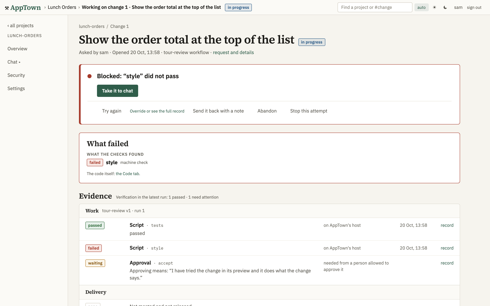
Infrastructure
The machines and services apps run on, and how much room each has.
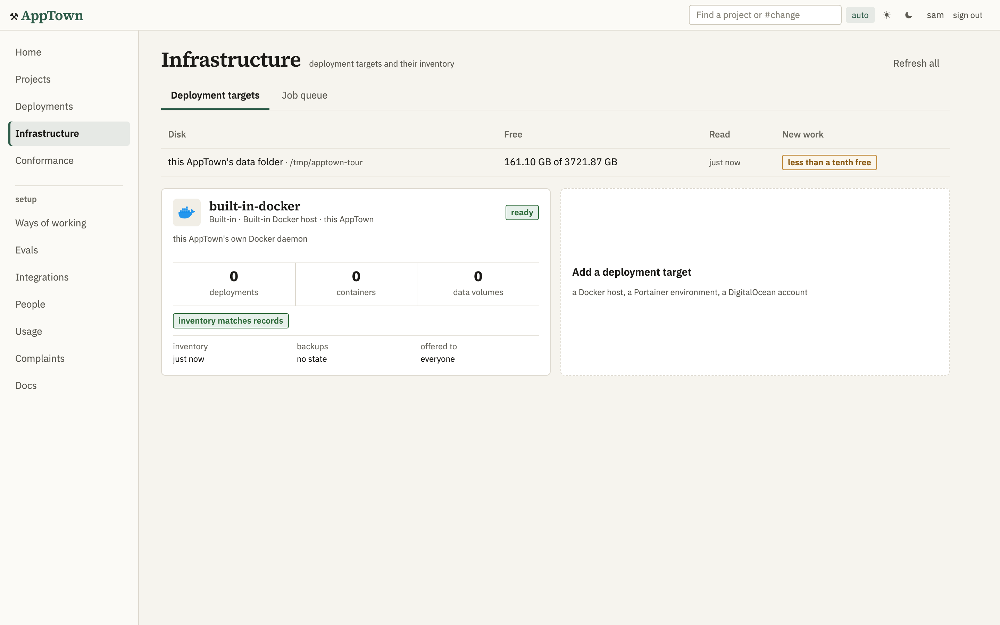
Conformance
Whether each app still follows the team's ways of working, and what to fix.
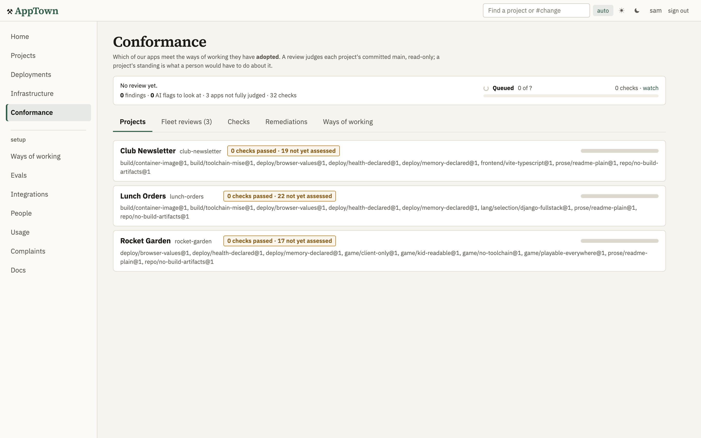
Ways of working
The team's habits as data, guidance, checks and workflows, adopted by projects and versioned.
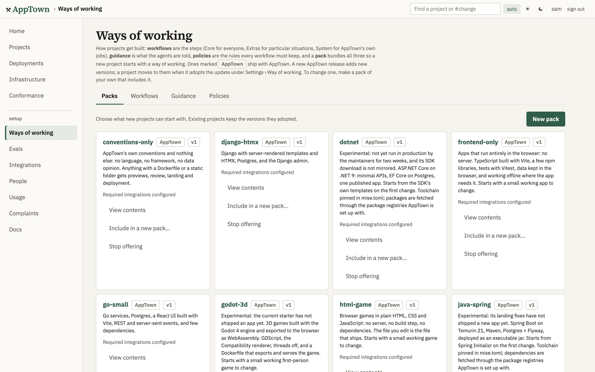
Usage
What the agents cost in tokens, and where each workflow's time goes, step by step, including how long approvals wait for a person.
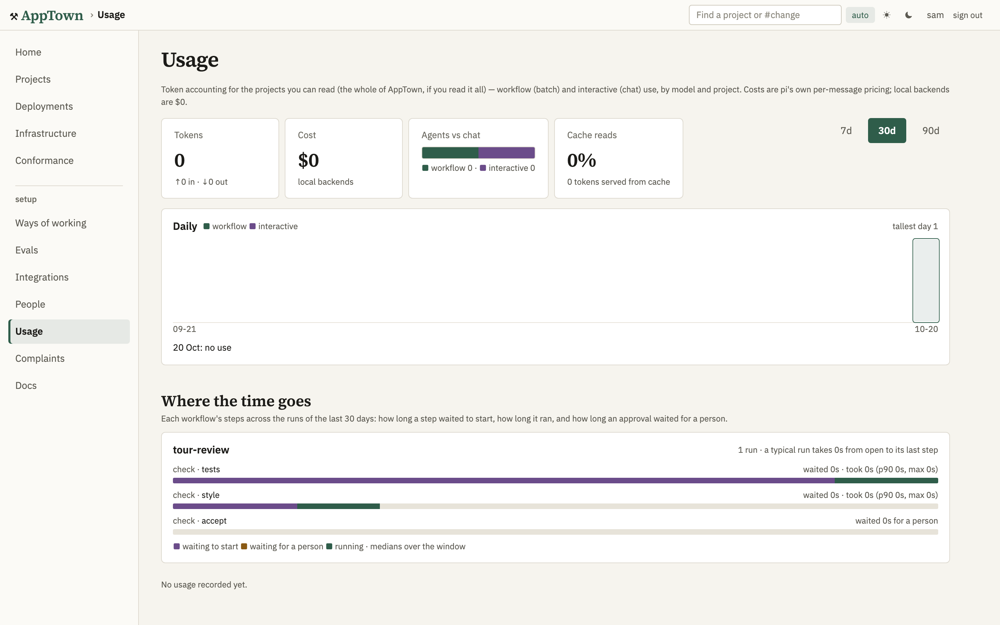
People
Who can do what, granted by role, and the record of each grant.
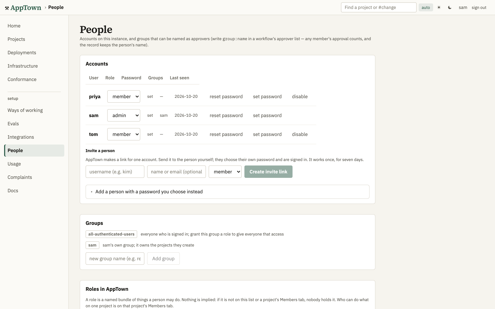
Docs
The guides ship with AppTown and open inside it.
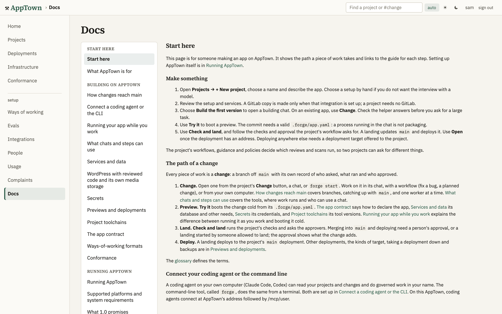